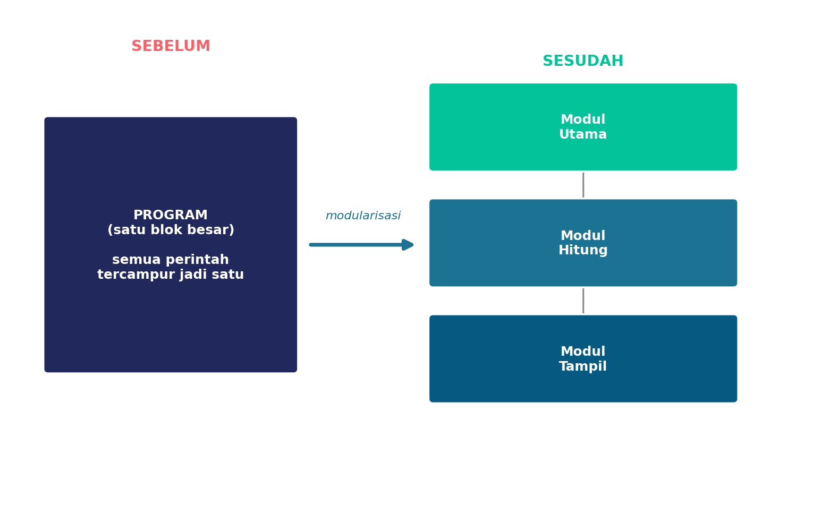
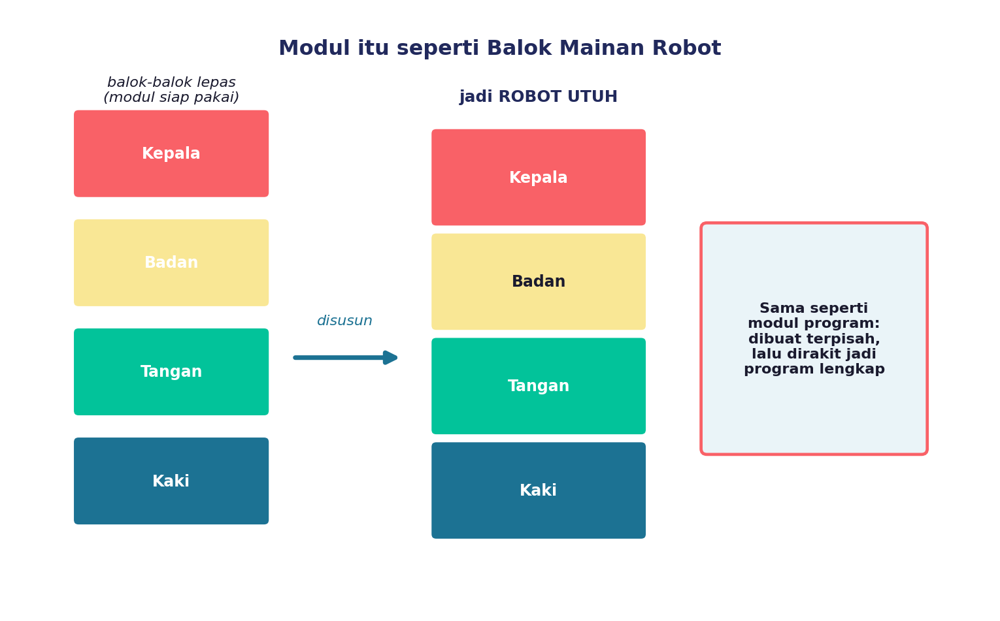
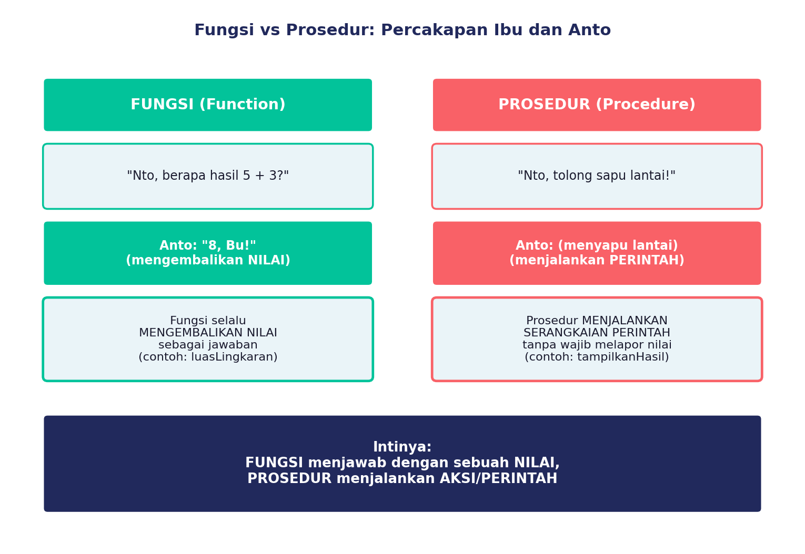
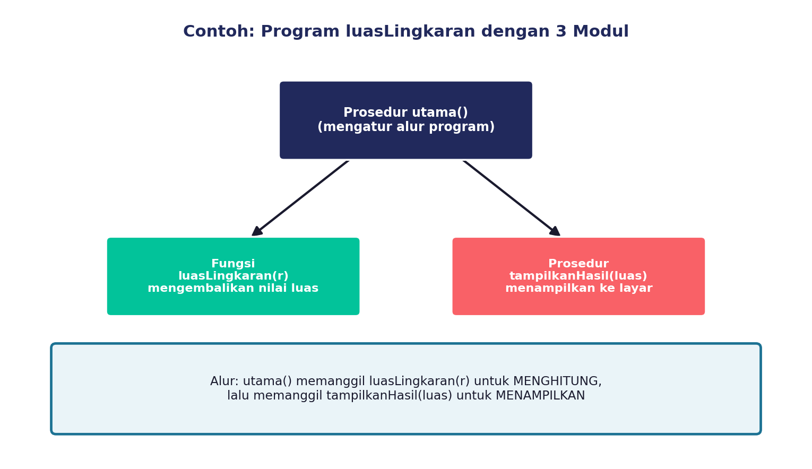
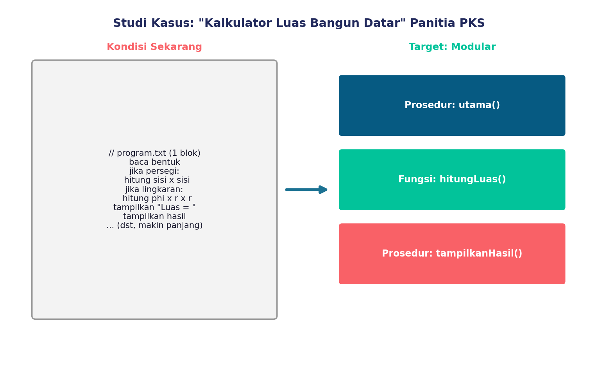

Di materi sebelumnya, kita udah kenalan sama dekomposisi dan library lewat cerita panitia Pekan Kreativitas Siswa (PKS) yang bikin "Kalkulator Luas Bangun Datar". Nah, sekarang bayangin programnya udah jadi... tapi semua kodenya ditulis dalam SATU blok super panjang.
Baca bentuk, hitung luas, tampilkan hasil — semuanya nyampur jadi satu! Kebayang kan ribetnya kalau mau nyari atau benerin satu bagian doang?
Nah, di sinilah kita butuh yang namanya MODULARISASI PROGRAM. Yuk, kita bongkar bareng-bareng!
Apa Itu Modularisasi?
Modularisasi itu artinya memecah program menjadi bagian-bagian terpisah yang disebut MODUL. Setiap modul punya tugas sendiri-sendiri, dan nanti bisa "dirakit" lagi jadi satu program yang utuh.
Inget konsep dekomposisi yang udah kita pelajari? Nah, modularisasi itu penerapannya langsung ke dalam kode program!


Dua Jenis Modul: Fungsi dan Prosedur
Modul program biasanya berbentuk salah satu dari dua ini: FUNGSI (function) atau PROSEDUR (procedure). Bedanya apa? Yuk simak percakapan Ibu dan Anto berikut ini!

FUNGSI itu...
modul yang selalu ngasih JAWABAN berupa nilai. Kayak pas ibu nanya "berapa 5+3?" terus Anto jawab "8!" — ada nilai yang dikembalikan.
PROSEDUR itu...
modul yang menjalankan PERINTAH tanpa wajib lapor nilai balik. Kayak pas ibu bilang "tolong sapu lantai" — Anto langsung ngerjain, nggak perlu ngasih "jawaban angka".
Program luasLingkaran dengan 3 Modul
Coba lihat contoh program menghitung luas lingkaran ini. Programnya dipecah jadi 3 modul:
- Prosedur utama() — mengatur alur keseluruhan program.
- Fungsi luasLingkaran(r) — MENGHITUNG luas dan mengembalikan nilainya.
- Prosedur tampilkanHasil(luas) — MENAMPILKAN hasil ke layar.

Coba perhatikan: fungsi luasLingkaran(r) ngasih BALIKAN berupa angka (nilai luas), sedangkan prosedur tampilkanHasil(luas) cuma NGELAKUIN aksi (menampilkan ke layar) tanpa harus ngembaliin nilai apa pun.
Kenapa Modularisasi Itu Penting Banget?
Lebih Mudah Dibaca
Program yang dipecah jadi modul-modul kecil jauh lebih gampang dipahami — nggak perlu baca ratusan baris kode sekaligus.
Lebih Gampang Diperbaiki
Ada error di bagian hitung luas? Tinggal cek modul luasLingkaran-nya aja, nggak perlu bongkar semua kode.
Nyambung ke Library!
Modul yang udah jadi dan teruji bisa disimpan jadi bagian dari library, biar bisa dipakai ulang (inget materi sebelumnya, kan?).
Di Scratch, kamu bisa bikin modul sendiri lewat fitur My Blocks (Make a Block). Di Blockly, ada kategori khusus Functions yang bahkan bisa bikin fungsi dengan nilai balikan.
Studi Kasus: Memodularkan Kalkulator Luas Bangun Datar

Sekarang giliran kamu! Bareng kelompokmu, coba pikirin:
- Kalau program "Kalkulator Luas Bangun Datar" mau dipecah jadi modul-modul, modul apa aja yang perlu dibuat?
- Dari modul-modul itu, mana yang cocok jadi FUNGSI (ngasih nilai balik) dan mana yang cocok jadi PROSEDUR (cuma jalanin perintah)?
- Coba tebak dulu (bikin hipotesis) sebelum kamu benar-benar mengecek jawabannya di LKPD!
Tulis jawabanmu di LKPD yang dibagikan gurumu, ya!
Kuis Interaktif
1. Proses memecah sebuah program menjadi bagian-bagian terpisah yang masing-masing punya tugas sendiri disebut...
2. Sebuah modul bernama tampilkanHasil(luas) yang hanya menampilkan teks ke layar tanpa mengembalikan nilai apa pun tergolong sebagai...
3. Dari 3 modul program luasLingkaran (utama, luasLingkaran, tampilkanHasil), modul manakah yang termasuk FUNGSI? Jelaskan alasanmu dalam satu kalimat!
Rangkuman Kilat
- Modularisasi = memecah program jadi modul-modul kecil yang punya tugas masing-masing.
- Fungsi (function) = modul yang mengembalikan sebuah NILAI sebagai jawaban.
- Prosedur (procedure) = modul yang menjalankan PERINTAH tanpa wajib mengembalikan nilai.
- Modularisasi bikin program lebih mudah dibaca, diperbaiki, dan berpotensi jadi bagian dari library.
Refleksi Diri
Sebelum lanjut ke materi berikutnya, coba jawab dulu: